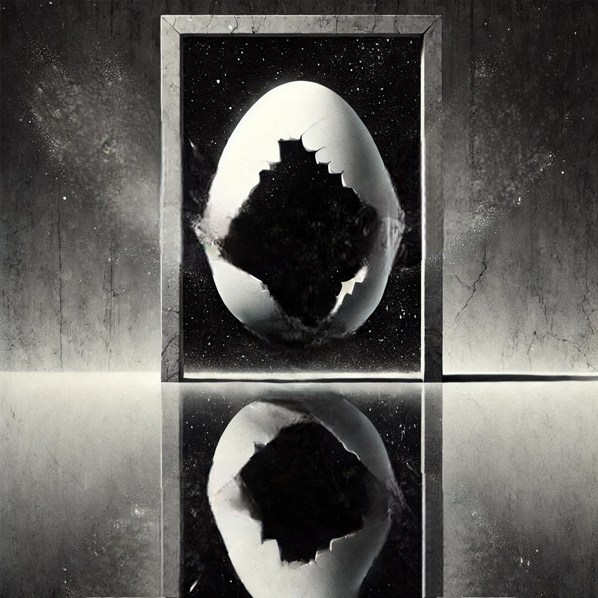

작가
헤르만 헤세
출판일
1919년
감상평에 대한 AI그림
"새는 알에서 나오려고 투쟁한다. 알은 세계다. 태어나려는 자는 한 세계를 파괴해야만 한다."
친구가 나에게 이 문장을 얘기하며 데미안을 선물했는데,
그 문장을 생각하며 읽어서 그런가 나에게도 제일 가슴에 와닿는 문장이 되었다.
작중 주인공인 싱클레어가 정말 많은 고뇌를 하고 여러 사건을 겪지만,
결국 그 모든 게 한 인간의 내면적 성장과 자아를 찾아가는 과정을 보여주는 것이었다고 생각한다.

감상평에 대한 AI평가
『데미안』의 핵심 메시지를 깊이 이해하고, 개인적인 경험과 연결하여 감상을 표현한 점이 인상적입니다.
✨ 특히 “새는 알에서 나오려고 투쟁한다”는 문장이 독자에게 강한 울림을 주었고
✨ 이를 작품 전체와 연결 지어 해석한 점이 돋보입니다.
✨ 싱클레어의 고뇌와 성장 과정을 하나의 흐름으로 파악하며, 인간이 자아를 찾기 위해 반드시 거쳐야 하는 과정임을 공감한 점이 뛰어납니다.
결하면서도 진솔한 감상이 담겨 있어, 작품의 의미를 자연스럽게 전달하는 좋은 글입니다.